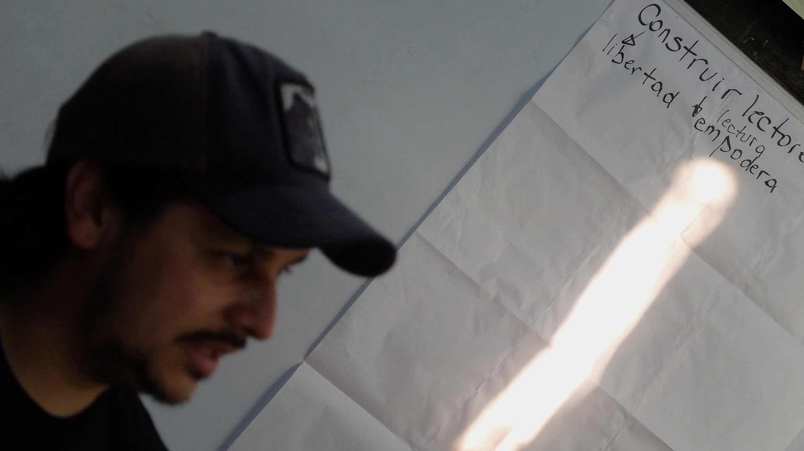
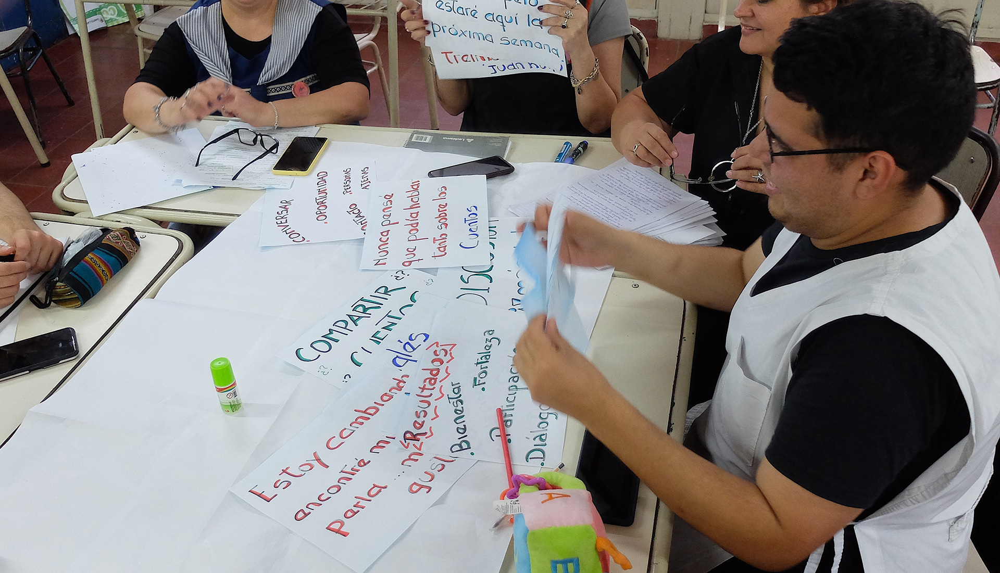
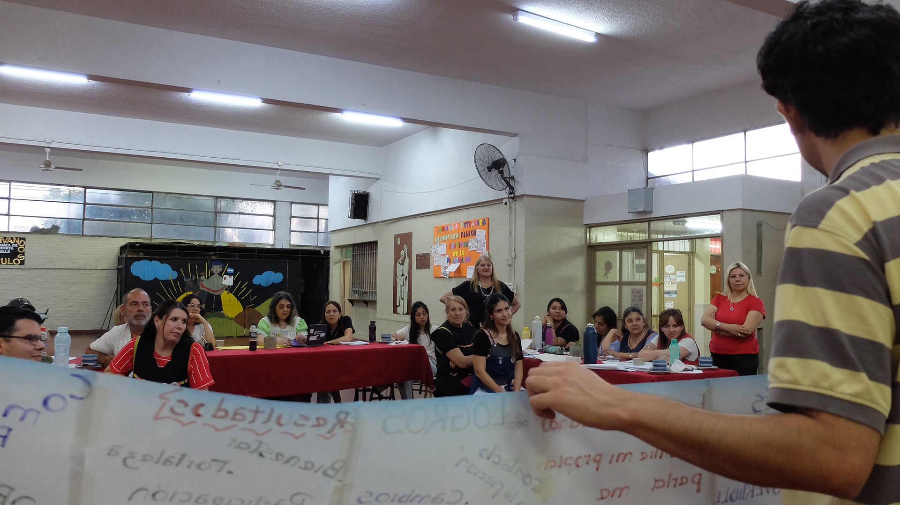
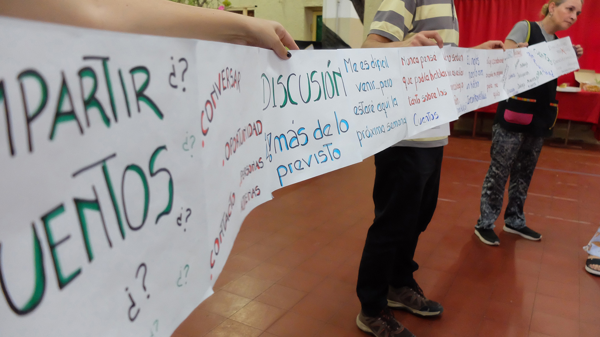
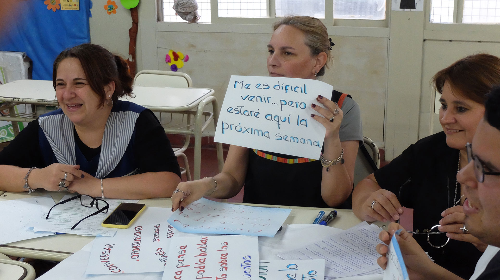
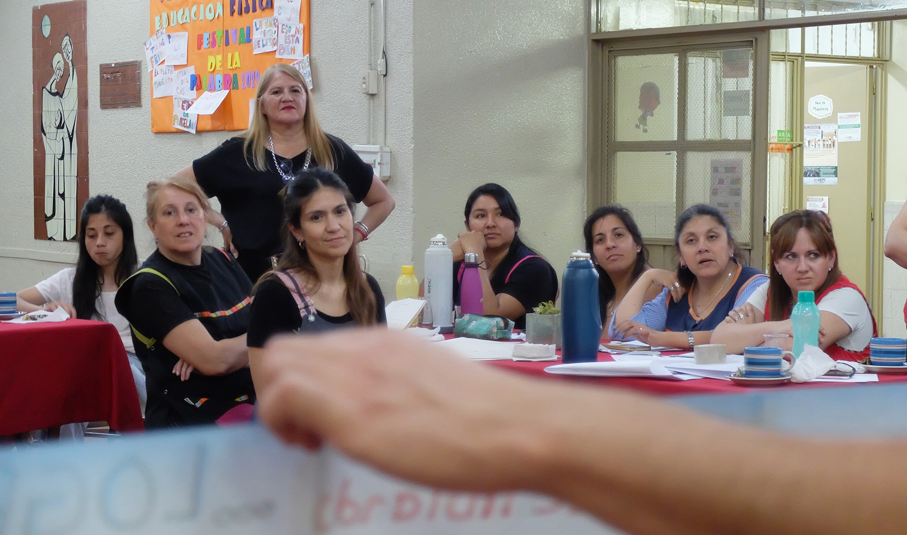
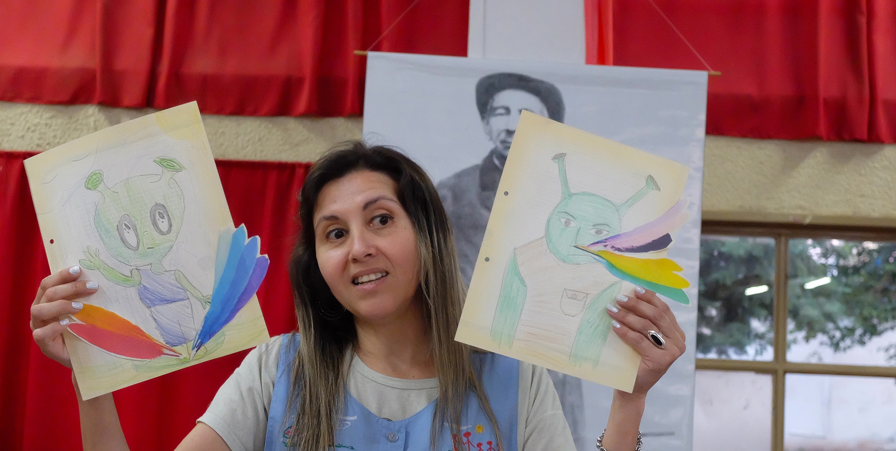
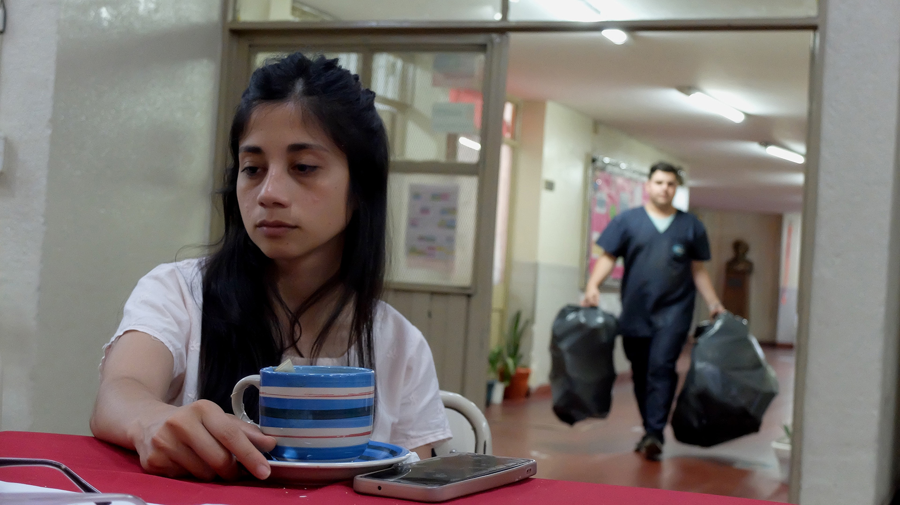

Transformaciones
El estudio (...) [tiene que ver] con la formación del sujeto y con la transformación de su relación con el mundo, es decir, con hacerla más atenta, cuidadosa, densa y profunda
Jorge Larrosa
Elogio del estudio
(p. 69)
Puesta en común: compartir conocimientos



26 Escuela Primaria Cura Brochero. Docente exponiendo en el cierre de la jornada. Luciana Dadone, 2024.

27 Escuela Primaria Cura Brochero. En el salón de usos múltiples, docentes preparan su exposición para el final de la jornada de trabajo acompañados por la directora y la vicedirectora. Luciana Dadone, 2024.

28 Escuela Primaria Cura Brochero. Los docentes socializan sus lecturas frente a todos los participantes. Luciana Dadone, 2024.

29 Escuela Primaria Cura Brochero. Los docentes socializan sus lecturas frente a todos los participantes. Luciana Dadone, 2024.

30 Escuela Primaria Cura Brochero. Los docentes socializan sus lecturas frente a todos los participantes. Luciana Dadone, 2024.

31 Escuela Primaria Cura Brochero. Los docentes socializan sus lecturas frente a todos los participantes. Luciana Dadone, 2024.

32 Escuela Primaria Cura Brochero. Una docente socializa su lectura frente a todos los participantes. Luciana Dadone, 2024.

33 Escuela Primaria Cura Brochero. Una docente participa de la puesta en común y cierre de la jornada de trabajo. Luciana Dadone, 2024.